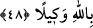

bunu yapmalıdır. Değişik beldelere halîfeler göndermek de bu kabildendir. Çünkü
bunda kulların faydalanması söz konusudur. Nitekim bu, doğru yolda yürüyenlere gizli
değildir.
48. Kâfirlere ve münafıklara boyun eğme. Onların eziyetlerine aldırma. Allâh’a
güvenip dayan, vekîl ve destek olarak Allah yeter.
Mekke ehlinden “Kâfirlere ve” Medîne ehlinden “münâfıklara boyun eğme.” Onlara
itâat etmemenin mânâsı, muhâlefet etmekte ve itâat etmemekte, onlara uymamakta
bulunduğun hal üzere sâbit ve dâim ol, demektir.
el-İrşâd’da şöyle denilmiştir: “Bu ifâde, onlara dâvet hususunda dalkavukluk
yapmayı, tebliğde yumuşak davranmayı ve korkutup uyarmada müsâmaha göstermeyi
yasaklamaktadır. Onlara boyun eğmenin yasaklanması, bu husustan kinâye olarak ifâde
edilmiştir. Bu ifâde, yasaklanan bu hususu onlara itâat etmek sayarak ve onlara itâat
şeklinde tasvir ederek Hz. Peygamber (s.a.)’i mübâlağa ile ondan men etmek ve nefret
ettirmek içindir.”
“Onların eziyetlerine aldırma.” Yâni dâvet ve uyarıdaki kararlılığın sebebiyle
onların sana eziyet etmelerini önemseme.
İbn Mes‘ûd’dan rivâyet edildiğine göre Rasûlullah (s.a.) bir ganîmet taksiminde
bulundu. Ensardan bir adam: “Bu Allah rızâsının gözetilmediği bir taksimâttır.” dedi.
Bu söz, Hz. Peygamber (s.a.)’e haber verilince yüzü kıpkırmızı oldu ve “Allah kardeşim
Mûsâ’ya rahmet etsin, o bundan daha çok eziyete mâruz kaldı da sabretti.” buyurdu.
[253]
Hak, yüz binlerce kimyayı (terkîbi) yarattı,
İnsan, sabır gibi bir kimyayı (formülü) görmedi.
et-Te’vîlâtü’n-Necmiyye’de şöyle denilmiştir. “Kâfirlere ve münâfıklara boyun
eğme” yâni onların ahlâkından hiçbiriyle ahlâklanma. Bizim kendilerinden yüz
çevirdiğimiz ve kalbini zikrimizden gâfil kıldığımız ve kendilerini sapıttığımız küfür,
nifak, bid‘at ve şikak ehlinden kimselere muvâfakat etme. Burada sıdk ile talebde
bulunan tâliblere, bu sözden gâfil münkirlerin nefislerinin hevâsına uygun olarak
kendilerini çağırdıkları hususlarda onlara itâat etmemelerine işâret vardır. O münkirler
böyle yaparak onların yollarını keserler ve kendilerini onlara nasihatçı ve müşfik
kimseler olduklarını iddiâ ederler. Kendilerinin gerçekten iyi şeyler yaptıklarını